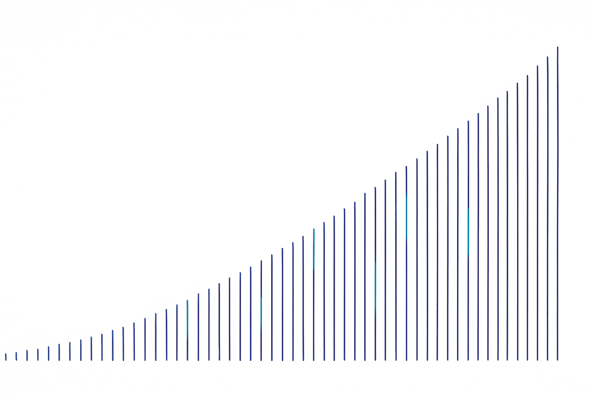
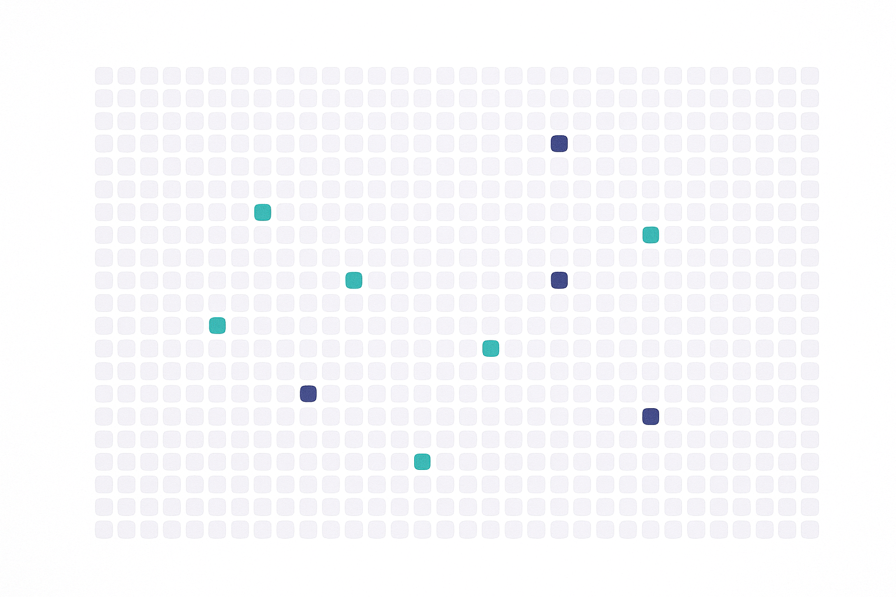
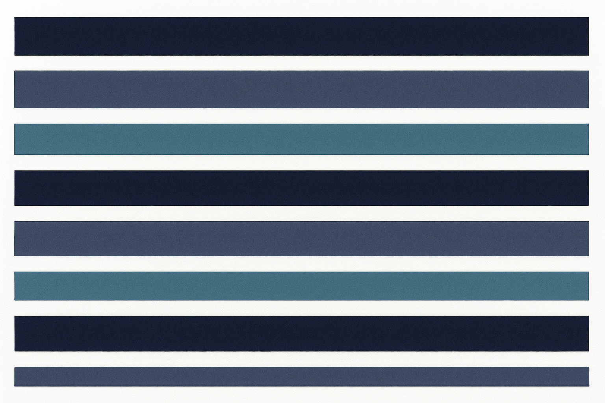

Point Ascent at your dataset and your metric. It runs literature-grounded, audit-gated experiments for days on a commodity laptop, keeps only strict improvements, and hands you a fingerprinted, one-command-reproducible bundle for every kept champion.

Every number below appears in a pack artifact and carries its source tag. Where a figure is founder-reported or assumed, it says so at the point of use.
94,800 stars and 13,400 forks in six months; no active maintainer since 2026-03-26.A1
0 of 16 curated notable forks added rigor. Fourteen are hardware ports or translations.A2
Across all 20 competitor rows, the sustained-campaign × audit-gated quadrant has no occupant.
Removing the citation gate raised invalid experiments 42% and produced 3 leakage incidents. One task, one seed, founder-reported.
Six domains, one protocol, full ledgers — finance, physics, medical imaging, clustering, fraud, LLM training.
Three gates run before commit. A failing experiment never enters the champion line.
BYOK puts token COGS on the user's card: 82.0% gross margin at 150 users, ≥85% at 300+.
$125/mo against $1,100/day of the practitioner's own time.C25
Core TAM $2–3B, job-filtered at the TAM layer with the arithmetic shown.

A binding 52-section protocol governs every experiment. Three programmatic checks run before any commit — not linting, not advice: an experiment that fails a gate never enters the champion line. Refusal is the default state.
Purged and embargoed super-folds. validate_no_overlap() runs programmatically and the runner refuses to launch on any overlap.D8
Every reference verified against live indexes before compute is spent. Ungated fabrication rates run 14–95%; a refused experiment costs a message, not a GPU-hour.D35
The agent may not, by contract, write a result row. The runner writes what actually happened.D33
Not a dashboard of green numbers. A laboratory notebook that cannot be falsified — read like a trading terminal, steered like a chat.
An append-only log records every experiment — kept and discarded — with seed, config, git commit and gate verdicts. It is the denominator every honest statistic needs.D6
The deflated Sharpe ratio, computed from the true ledger count and displayed beside every raw champion figure.D7
Purge, embargo and label-horizon buffers drawn on your actual dates.D8
Tracks the composite proxy against each raw target metric and alerts when they diverge — because proxy optimization characteristically helps, then hurts.D31
The keep/discard threshold rises with ledger count: a candidate kept at trial 20 is rejected at trial 220 unless it clears the inflation-adjusted bar. No published system has this gate — the proof of concept included.

All results are founder-reported, single-seed in most domains, on public datasets with contamination caveats, and reproducible from the repo — not independently verified. That framing is binding on every artifact we publish.A6
| Domain | Result | Trials |
|---|---|---|
| EUR/USD signals | Sharpe +6.52 — raw, pre-deflation | 265+ |
| QQQ signals | Composite Sharpe +1.32 · PSR 0.997 | 216+ |
| Higgs classification | AUROC ≈ 0.8675+ | — |
| PathMNIST OOD | AUC 0.997 | — |
| Olivetti faces | Conditional ARI 0.874 | — |
| Fraud detection | AUC 0.6097 vs AutoGluon 0.522 / H2O 0.518 | — |
Removing the citation gate spiked invalid experiments 42% and produced 3 leakage incidents the gated arm did not. One task, one seed, founder-reported.
Attestation packs, BYO-endpoint, fingerprint refusal and the acceptance gate are roadmapROADMAP — named as such everywhere, never sold as shipped. The honesty ledger listing what the story implies and the repo lacks is published in the pack itself.
A 24/7 steering loop on mid-tier models costs $3–12/day of your own tokens — against a conservative $1,100/day for your own time. BYOK is the architecture, not a discount gimmick.A12
I ran 265+ experiments across six domains, logged every trial kept and discarded, and never wrote a line of Python.
Every instruction given to the system over months fits in one readable file, and none of it is code. Somewhere in month two the pattern became obvious: everything the human contributed was some form of no — no, that split leaks; no, cite the paper or discard the idea; no, one change per experiment; no, the champion stands until something strictly beats it.
Execution stopped being the bottleneck; discipline did. The field keeps making agents more capable. Nobody is making them more honest. So the discipline got written down — all of it — into a constitution that never gets tired at 2am.
64 documents and 113 rendered visuals, cross-reconciled across research, strategy, product, tech, narrative, validation and financials. Read it in the browser — diagrams drawn, tables formatted, sources tagged.